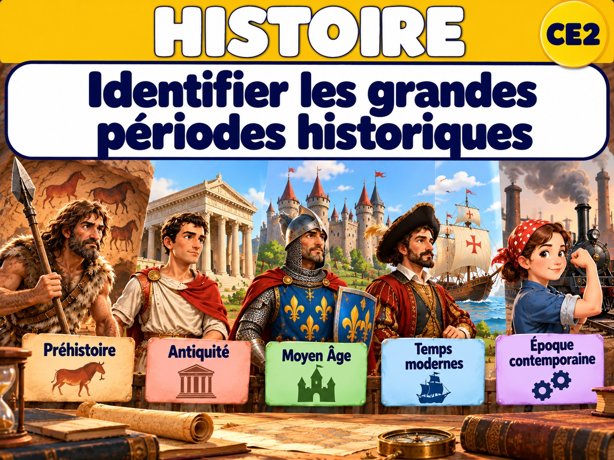
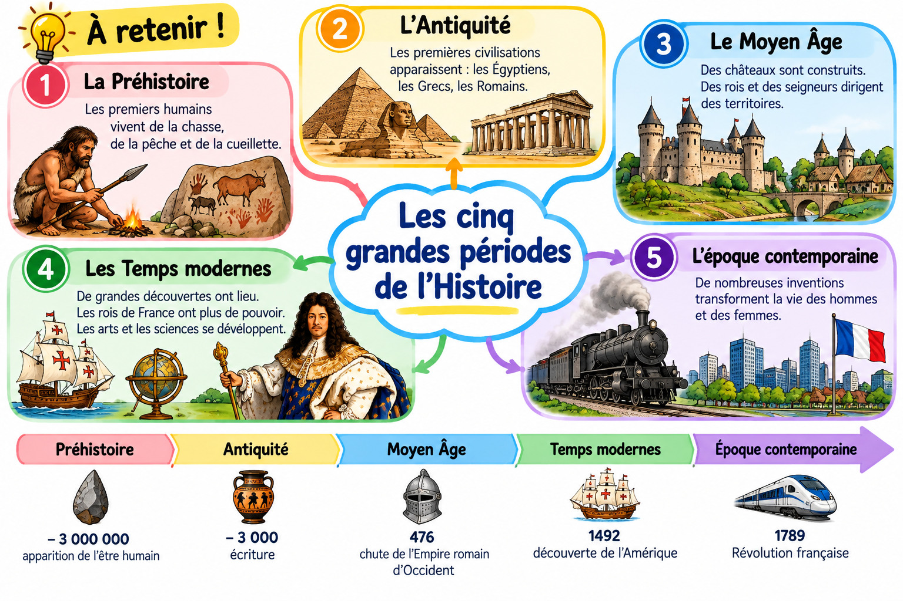

MAÎTRE HIBOU · HISTOIRE · CE2 · PÉRIODE 1
Identifier les grandes périodes historiques
Découvrir les cinq grandes périodes
Je découvre
Observe les exemples suivants.

Quelle période vient après l’Antiquité ?
Je comprends
Les historiens divisent le passé en cinq grandes périodes. Les limites indiquées sont des repères conventionnels utilisés pour l’histoire de France. Les changements n’ont pas eu lieu partout à la même date.
La lecture de gauche à droite permet de visualiser la succession des événements ou des périodes.
Leçon — À retenir
